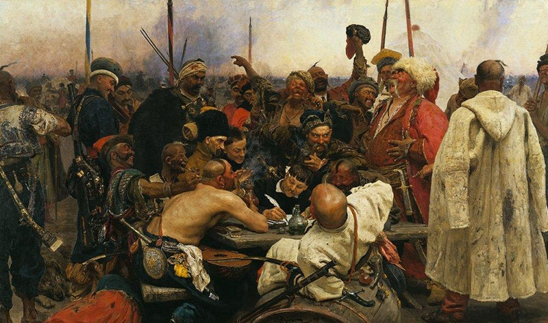

А як щодо найкращих дитячих книг українських письменників? Їх також чимало. Мабуть, найпопулярнішим дитячим автором був і залишається Всеволод Нестайко. Він написав дуже багато добрих історій про дружбу, взаємовиручку й веселі пригоди юних героїв, що з них можна зібрати свою домашню дитячу бібліотеку.
Думи мої, думи мої, Лихо мені з вами! Нащо стали на папері Сумними рядами?.. Чом вас вітер не розвіяв В степу, як пилину? Чом вас лихо не приспало, Як свою дитину?..
Бо вас лихо на світ на сміх породило, Поливали сльози... чом не затопили, Не винесли в море, не розмили в полі?. Не питали б люде, що в мене болить, Не питали б, за що проклинаю долю, Чого нуджу світом? "Нічого робить", — Не сказали б на сміх...
Квіти мої, діти! Нащо ж вас кохав я, нащо доглядав? Чи заплаче серце одно на всім світі, Як я з вами плакав?.. Може, і вгадав... Може, найдеться дівоче Серце, карі очі, Що заплачуть на сі думи, — Я більше не хочу. Одну сльозу з очей карих — І пан над панами! Думи мої, думи мої, Лихо мені з вами!
За карії оченята, За чорнії брови Серце рвалося, сміялось, Виливало мову, Виливало, як уміло, За темнії ночі, За вишневий сад зелений, За ласки дівочі...
